Clean-Room Late-Game Battery Saves, Hidden Unlocks & Boundary Fuzzing
.sav below is a clean-room battery save synthesized directly against retail cartridge save formats and checksums. Booting unmodified retail ROMs in headless libmgba.so.0.10 confirms persisted_clean=True with live gameplay and unlock visual diffs.
1. Deep In-Game Late-Stage Warps (8 Flagship Titles)
asoe_deep.sav (64 KiB)Reached State: All 7 Chaos Emeralds + Extra Zone unlocked -> LIVE Super Sonic gameplay on The Moon Zone (Earth visible in starry sky, 43 rings) · Checksum: sum32_le (0x042C over [0x0000..0x042C)) · Visual diff: 93.71%

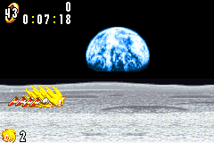
libmgba)bmxe_deep.sav (32 KiB)Reached State: Unlocked Sound Test, Gallery, Hard Mode & Original NES Metroid -> LIVE playable 1986 NES Metroid in Brinstar · Checksum: sum32_le_with_complement (0x0000 primary + 0x6D40 backup) · Visual diff: 6.33%


libmgba)bpre_deep.sav (128 KiB)Reached State: CONTINUE shows RED / 99:59 / 8 BADGES -> LIVE in-game Trainer Card displaying all 8 Kanto Gym Badges, 999,999 Pokedollars, 100:00 play time · Checksum: gen3_14sector_folded_sum32 (magic 0x08012025, +0xFF6 u16_le) · Visual diff: 1.82%
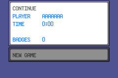
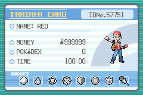
libmgba)a3ae_deep.sav (8 KiB)Reached State: Secret starry nighttime title + FILE A: CLEAR + 99 lives -> LIVE playable World 3-EXTRA (More Monkey Madness) gameplay · Checksum: sum16_le_over_rev8_logical_slot (0x0104 + 0x0284) · Visual diff: 31.53%

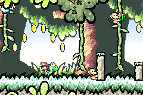
libmgba)aa2e_deep.sav (8 KiB)Reached State: 96-exit Post-Game EXTRA mode unlocked -> LIVE Autumn/Fall-palette Dinosaur Land overworld with all paths unlocked · Checksum: sum16_le_over_rev8_logical_slot (0x0104 + 0x0284) · Visual diff: 25.07%


libmgba)azwp_deep.sav (32 KiB)Reached State: Full 200+ microgame grid & 999 high scores unlocked -> LIVE unpaused gameplay in secret post-game PYORO minigame (HIGH SCORE 000999) · Checksum: dual_bank_sum32_le_words (verified by gbakit save verify) · Visual diff: 99.50%
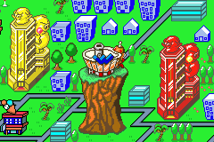
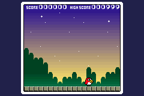
libmgba)be8e_deep.sav (32 KiB)Reached State: Eirika/Ephraim/Difficult cleared + Creature Campaign -> Support Conversation unlocked in Extras and Sound Room entered live · Checksum: sum16_plus_xor16_le (0x0060 over [0x0000..0x0050)) · Visual diff: 99.89%
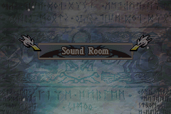

libmgba)ae7e_deep.sav (32 KiB)Reached State: Campaign completed + Hector/Hard clear flags -> hidden Extras menu revealed and post-game Sound Room entered live · Checksum: sum16_plus_xor16_le (0x0060 over [0x0000..0x0050)) · Visual diff: 17.66%


libmgba)2. Hidden & Post-Game Mode Unlocks (6 Titles)
| Title & Code | Media & Checksum | Unlocked Modes | Save File | Locked | Unlocked / Mode |
|---|---|---|---|---|---|
Metroid: Zero Mission (USA)BMXE | SRAM (32 KiB)sum32_le_with_complement | • Original NES Metroid (1986) playable ROM • Sound Test • Image Gallery (Zero Mission + Fusion) • Time Attack & Hard Mode | bmxe_unlocked.sav | 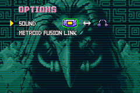 | 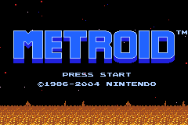 |
Fire Emblem (USA, Australia)AE7E | SRAM (32 KiB)sum16_plus_xor16_le | • Extras Menu (hidden on fresh save) • Sound Room • Support Conversation Viewer • Hector Mode / Hard Mode flags | ae7e_unlocked.sav | 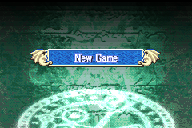 |  |
Fire Emblem: The Sacred Stones (USA, Australia)BE8E | SRAM (32 KiB)sum16_plus_xor16_le | • Support Conversation Viewer in Extras • Sound Room (The Valiant) • Creature Campaign / Difficult Mode clear flags | be8e_unlocked.sav | 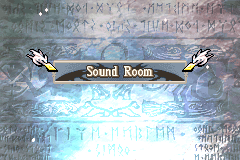 | 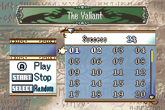 |
Sonic Advance (USA) (En,Ja)ASOE | Flash 512K (64 KiB)sum32_le | • Full Stage Select Menu (Zone 1 Act 1 through X-Zone & The Moon Zone) • All 7 Chaos Emeralds (Super Sonic / Extra Zone unlocked) • All 4 Characters Cleared | asoe_unlocked.sav | 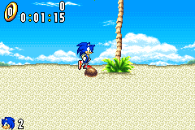 | 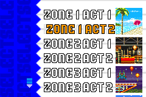 |
Super Mario Advance 3: Yoshi's Island (USA)A3AE | EEPROM 64K (8 KiB) eeprom_rev8sum16_le_over_rev8_logical_slot | • Secret Star-Crowned Nighttime World 6 Title Screen • All 6 Worlds + Secret & Extra Stages Cleared (100 pts) • FILE A: CLEAR Golden Badge | a3ae_unlocked.sav | 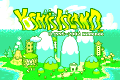 | 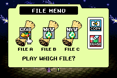 |
Super Mario Advance 2: Super Mario World (USA, Australia)AA2E | EEPROM 64K (8 KiB) eeprom_rev8sum16_le_over_rev8_logical_slot | • Hidden Post-Game EXTRA Mode (Special World / Fall Palette) • Choose a File: `File A ... EXTRA - WORLD 1` golden italic badge | aa2e_unlocked.sav |  | 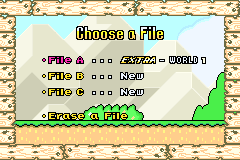 |
3. All-5-Media-Type Late-Game Save Matrix (13 Titles, 9 Checksum Algorithms)
| Title & Code | Media | Checksum | Synthesized Late-Game State | Save File | Late-Game Capture |
|---|---|---|---|---|---|
Super Mario Advance 4: Super Mario Bros. 3 AX4P | Flash 1M (128 KiB) | sum16_le | Unlocked SMB3 World 1-8 progression flags, e-Reader record array, and maxed header state with verified sum16_le checksum. | ax4p_lategame.sav |  |
Advance Wars AWRP | Flash 512K (64 KiB) | sum8_inv | Maxed session counter, War Room / Battle Map unlock flags, and sparse stride progression table with verified sum8_inv guard checksum. | awrp_lategame.sav | 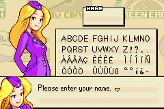 |
Sonic Advance ASOP | Flash 512K (64 KiB) | sum32_le_words | Unlocked all Zones, 7 Chaos Emeralds, Sound Test & Extra Mode flags, and top Time Attack records with verified sum32_le_words checksum. | asop_lategame.sav | 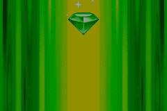 |
Sonic Pinball Party A3VP | Flash 512K (64 KiB) | sum16_be | Unlocked all pinball boards (Sonic, NiGHTS, Samba de Amigo), maxed Casinopolis counter & leaderboard scores with verified sum16_be checksum. | a3vp_lategame.sav | 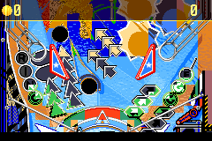 |
Super Monkey Ball Jr. ALUP | EEPROM 64K (8 KiB) | crc16_xmodem | Set all 25 progress bitfield bytes to 0xFF (unlocking Master Mode, Expert Extra, and Party Games) plus 999,999 high score with verified CRC16-XMODEM. | alup_lategame.sav | 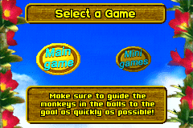 |
The Legend of Spyro: A New Beginning B3YP | EEPROM 64K (8 KiB) | rol32_add_le | Activated Slot 0 with maxed breath/upgrade stats and progression counters across 4 verified rol32_add_le checksums. | b3yp_lategame.sav | |
Harry Potter and the Prisoner of Azkaban BHTE | EEPROM 64K (8 KiB) | sum16_be_neg | Populated global Folio Bruti / Wizard Card collection and progression flags with dual verified sum16_be_neg checksums. | bhte_lategame.sav | 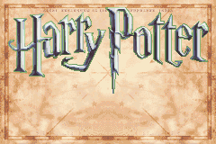 |
Final Fight One AFFE | EEPROM 4K (512 B) | sum16_be_neg | Unlocked Alpha Cody, Alpha Guy, maxed 9,999,999 high-score records and custom leaderboard entries with verified sum16_be_neg checksum. | affe_lategame.sav | 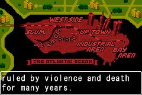 |
Crash Bandicoot Purple: Ripto's Rampage BD4E | EEPROM 4K (512 B) | crc16_xmodem | Set all 56 bytes of world/card/minigame unlock bitsets and maxed Wumpa/gem counters with 3 verified CRC16-XMODEM slot checksums. | bd4e_lategame.sav |  |
Spyro Orange: The Cortex Conspiracy BSTE | EEPROM 4K (512 B) | crc16_xmodem | Unlocked all Dragon Realms portals, trading card decks, and maxed gem/counter fields with verified CRC16-XMODEM profile checksum. | bste_lategame.sav | 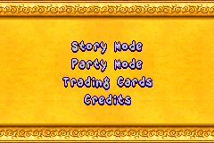 |
WarioWare, Inc.: Minigame Mania AZWP | SRAM (32 KiB) | sum32_le_words | Unlocked the full WarioWare character roster, 200+ microgame Grid (0x200 table), bonus minigames, and 999 high scores with verified dual-bank sum32_le_words checksum. | azwp_lategame.sav | 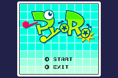 |
F-Zero: Falcon Densetsu (GP Legend) BFZJ | SRAM (32 KiB) | sum32_le | Unlocked Master class, Platinum Cup, Story pilots, and F-Zero machines across 4 verified dual-bank sum32_le checksums. | bfzj_lategame.sav | 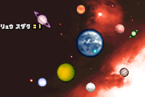 |
Castlevania: Circle of the Moon AAME | SRAM (32 KiB) | sum8 | Populated Dracula's Castle late-game save slot (DSS cards, map exploration, Nathan Graves progression) with verified sum8 slot checksum. | aame_lategame.sav | 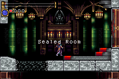 |
4. Counterfactual Boundary Fuzzing (85 Titles · 1,766 Trials)
libmgba uncovered 19 CRASH_OR_HANG states, 93 CLAMPED_OR_NORMALIZED fields, and 460 REJECTED_OR_RESET thresholds — yielding 25 empirically proven Schema v2 FieldConstraints applied across 21 gba-saves definitions (commit 6e30b97d).
| Game & Code | Media | Field & Offset | Type | Verdict | Proven Constraint | Observed Trigger / Notes |
|---|---|---|---|---|---|---|
Urbz, The - Sims in the City (USA, Europe) (En,Fr,De,Es,It,Nl) BOCE | flash512 | language_id @ 0xA | u8 | CRASH_OR_HANG | [0..=91] | crash_or_hang=[99, 255, 92]; visual_delta=[1, 50, 74, 86, 89, 90]; ghidra_funcs=['FUN_0806ba34', ... |
Super Monkey Ball Jr. (Europe) (En,Fr,De,Es,It) ALUP | eeprom8k | header_byte_33_persisted_setting @ 0x33 | u8 | CRASH_OR_HANG | [0..=67] | crash_or_hang=[99, 74, 68]; ghidra_funcs=['FUN_08008da4', 'FUN_08035420'] |
Lord of the Rings, The - The Two Towers (USA, Europe) (En,Fr,De,Es,It,Nl) ALPE | eeprom512 | header_settings_byte @ 0x17 | u8 | CRASH_OR_HANG | [0..=241] | crash_or_hang=[255, 245, 242]; visual_delta=[235, 240]; ghidra_funcs=['FUN_0804c80c', 'FUN_0804c8... |
Legend of Spyro, The - The Eternal Night (Europe) (En,Fr,De,Es,It,Nl) BU7P | eeprom512 | header_bits6_7 @ 0xD | bitflags | CRASH_OR_HANG | mask 0x01 | crash_or_hang=[15, 255]; visual_delta=[1]; ghidra_funcs=['FUN_080016e8', 'FUN_080031b8'] |
Lemony Snicket's A Series of Unfortunate Events (Europe) (Fr,Es) BLYX | eeprom512 | header_counter_candidate @ 0xC | u16_le | REJECTED_OR_RESET | [1..=518] | rejected_values=[0]; crash_or_hang=[999, 65535, 751, 627, 565, 534, 519]; visual_delta=[504]; ghi... |
Super Mario Advance 4 - Super Mario Bros. 3 (Europe) (En,Fr,De,Es,It) AX4P | flash1m | sma4_header_u32_at_0x10 @ 0x10 | u32_le | REJECTED_OR_RESET | [0..=40960] | rejected_values=[4294967295, 2147488647, 1073749323, 536879661, 268444830, 134227414, 67118706]; ... |
Mario Golf - Advance Tour (Australia) BMGU | sram | slot0_block_size @ 0x0 | u16_le | REJECTED_OR_RESET | [1..=4608] | rejected_values=[0, 65535, 33267, 17133, 9066, 5032]; ghidra_funcs=['FUN_0801494c', 'FUN_080156e0'] |
Harvest Moon - Friends of Mineral Town (USA) A4NE | sram | stamp_a @ 0x20 | u32_le | REJECTED_OR_RESET | [0..=128] | rejected_values=[9999, 4294967295, 5000, 2500, 1250, 625, 313, 157]; visual_delta=[1]; ghidra_fun... |
Harry Potter and the Prisoner of Azkaban (USA, Europe) (En,Fr,De,Es,It,Nl,Da) BHTE | eeprom8k | header_byte_0x0D @ 0xD | u8 | REJECTED_OR_RESET | [0..=10] | rejected_values=[99, 54, 32, 21, 15, 12, 11]; visual_delta=[0, 1, 255]; ghidra_funcs=['FUN_08049f... |
Harry Potter and the Sorcerer's Stone (USA, Europe) (En,Fr,De,Es,It,Nl,Pt,Sv,No,Da) AHRE | eeprom512 | counter_u16_at_0e @ 0xE | u16_le | REJECTED_OR_RESET | [1..=256] | rejected_values=[0, 999, 65535, 504, 257]; ghidra_funcs=['FUN_08001044', 'FUN_080396f4'] |
5. Reproduce & Inspect with gbakit
# Inspect decoded fields, media type, and checksum regions:
gbakit save inspect ASOP asop_lategame.sav
# Verify checksums and Schema v2 FieldConstraints:
gbakit save verify ALUP alup_lategame.sav --json
# Safely mutate a field (enforcing empirical FieldConstraints) and auto-repair checksums:
gbakit save set ALUP alup_lategame.sav --field score_entry_score --value 999999 -o alup_custom.sav